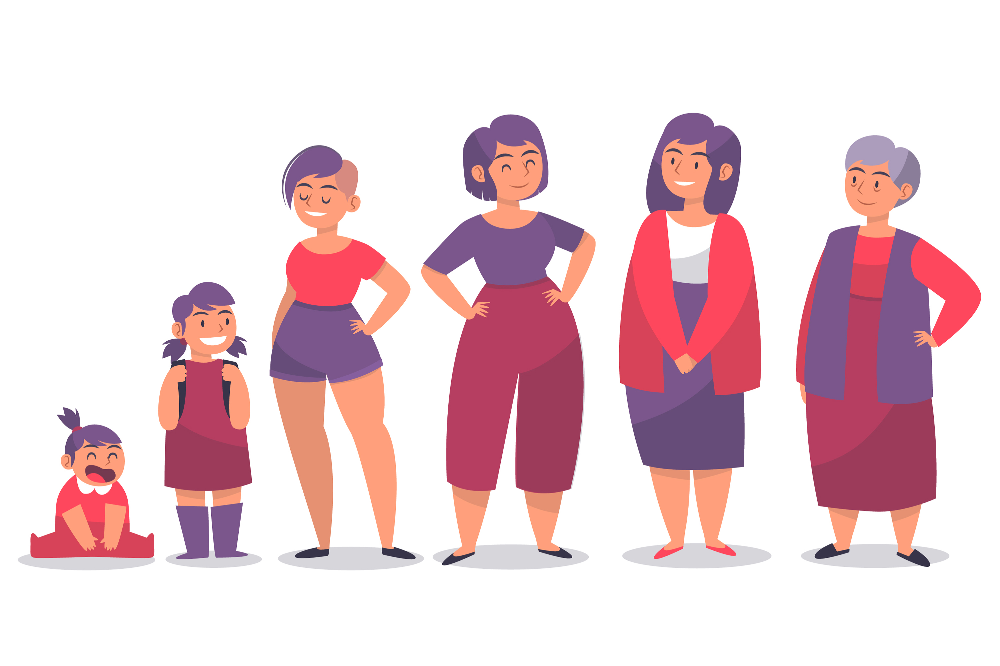
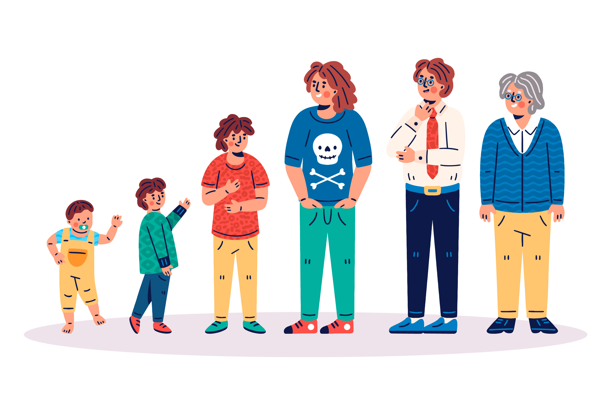
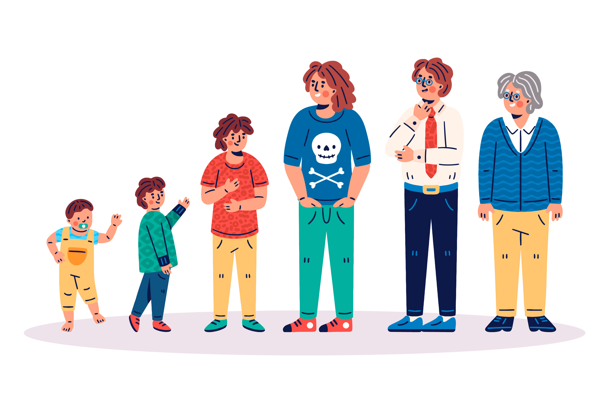
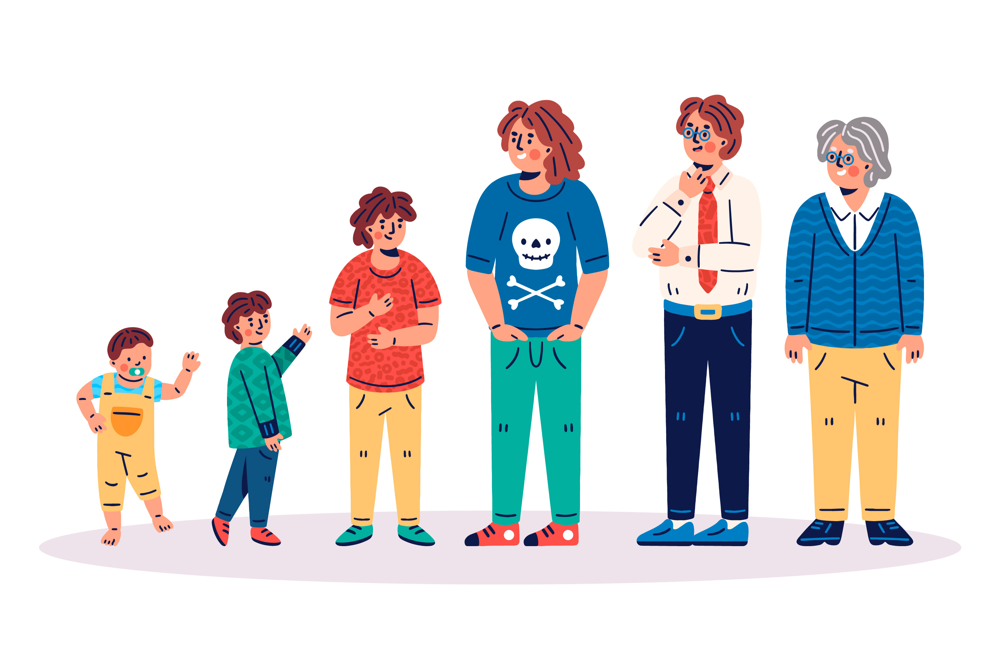
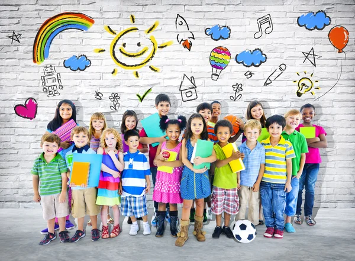
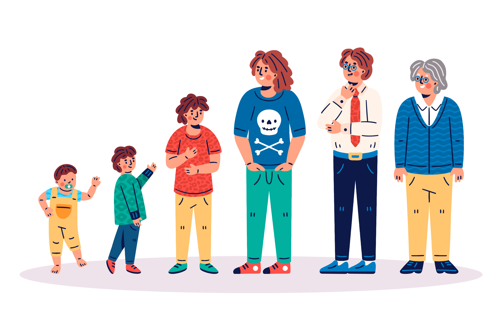
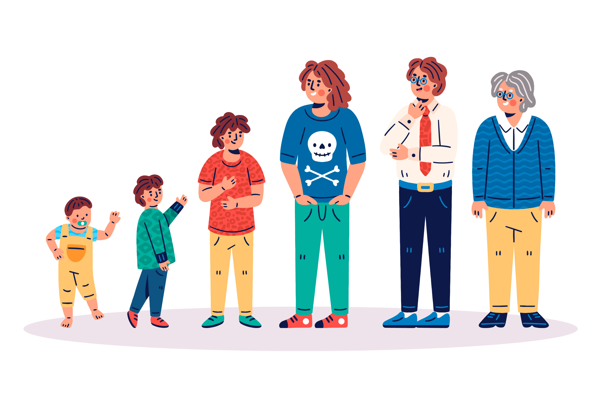

 



 

Durante la niñez, el cuerpo crece rápidamente, fortaleciendo huesos y músculos, mientras el cerebro mejora sus funciones. En la pubertad, impulsada por hormonas sexuales, se produce un estirón rápido acompañado de cambios en la forma corporal y la aparición de caracteres sexuales secundarios, como el desarrollo mamario en niñas y el aumento de la musculatura en niños.
En la adultez, la masa muscular y densidad ósea comienzan a disminuir lentamente. Con la vejez, los huesos se vuelven frágiles, la movilidad disminuye y el cuerpo muestra signos naturales de desgaste.
La niñez es la etapa inicial del desarrollo humano, caracterizada por un crecimiento físico rápido y un desarrollo cognitivo significativo. Durante estos años, los niños aprenden habilidades básicas como caminar, hablar y socializar, mientras su cerebro se va moldeando con experiencias y aprendizajes. Es un periodo fundamental para la formación de la personalidad, la adquisición de valores y la exploración del entorno. Además, el cuerpo se fortalece y se prepara para los cambios que vendrán en la adolescencia.
La adolescencia es una etapa de transición entre la niñez y la adultez, marcada por profundos cambios físicos, emocionales y sociales. El cuerpo experimenta la pubertad, con el desarrollo de caracteres sexuales secundarios y un crecimiento acelerado. Emocionalmente, es un periodo de búsqueda de identidad, autonomía y establecimiento de relaciones sociales más complejas. También es una etapa crucial para la formación de hábitos, valores y la toma de decisiones que influirán en la vida adulta.
La adultez es la etapa en la que el cuerpo alcanza su máximo desarrollo y estabilidad física, mental y emocional. Durante esta fase, las personas asumen responsabilidades como el trabajo, la familia y la vida social. Aunque el cuerpo comienza a mostrar signos de desgaste a partir de los 30 años, la adultez es un periodo de productividad, madurez y consolidación personal. Es también una etapa en la que se deben cuidar los hábitos para mantener la salud y prevenir enfermedades a largo plazo.
La vejez es la última etapa de la vida, caracterizada por una disminución progresiva de las capacidades físicas y, en algunos casos, cognitivas. Los huesos y músculos pierden fuerza, la piel se vuelve más frágil y la movilidad puede verse limitada. Sin embargo, es también un momento de reflexión, sabiduría y transmisión de experiencias a las nuevas generaciones. Con cuidados adecuados, muchas personas disfrutan de esta etapa con calidad de vida, manteniendo relaciones sociales y actividades que les aportan bienestar.